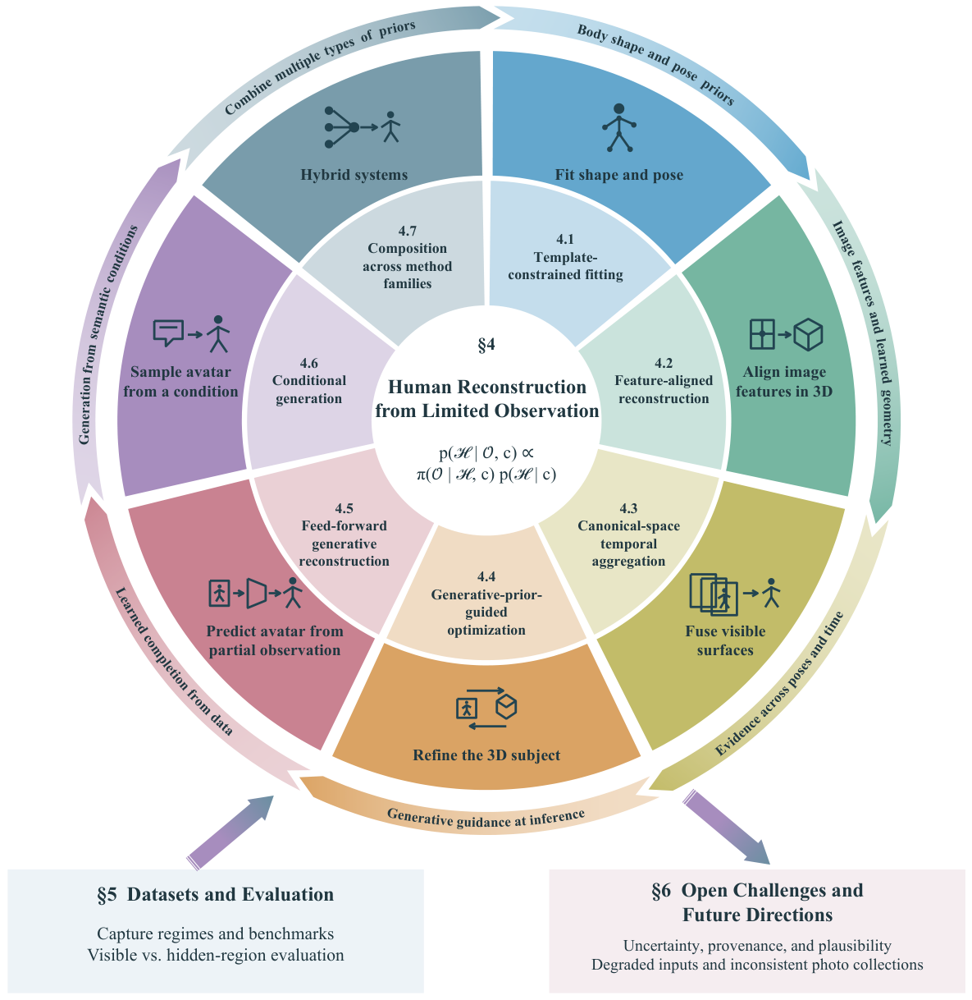

Survey companion · Research catalogue
Reconstructing Complete 3D Humans
from Limited Observations
Six compensatory mechanisms. Four observation axes.
Connecting subject-specific evidence with data-driven generation.
Survey overview

Explore the literature through our taxonomy; hybrid methods may span several families.